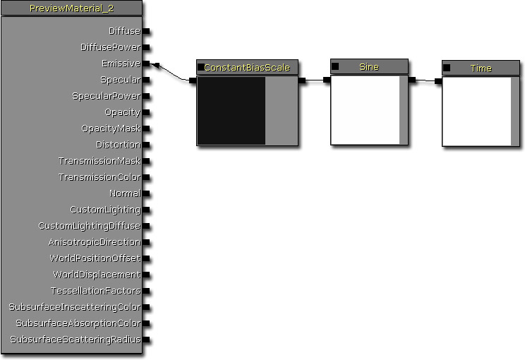
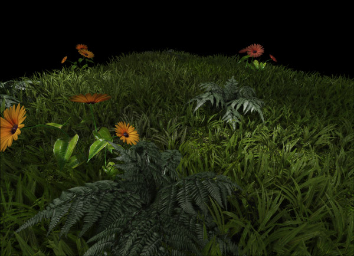

UDN
Search public documentation:
DevelopmentKitGemsUsingLightFunctions
日本語訳
中国翻译
한국어
Interested in the Unreal Engine?
Visit the Unreal Technology site.
Looking for jobs and company info?
Check out the Epic games site.
Questions about support via UDN?
Contact the UDN Staff
中国翻译
한국어
Interested in the Unreal Engine?
Visit the Unreal Technology site.
Looking for jobs and company info?
Check out the Epic games site.
Questions about support via UDN?
Contact the UDN Staff
UE3 Home > Unreal Development Kit Gems > Using Light Functions
Using Light Functions
Last tested against UDK June, 2011
PC compatible
Overview
Light functions allow you to create more interesting lighting set ups, such as flickering lights, textured lights, etc. If you've worked with Unreal Engine 2, light functions would be similar to projectors. Light functions uses Unreal Engine 3's material system, which makes it easy to create them. This development kit gem will demonstrate a variety ways light functions can be used to enhance your game. Please review light functions to read all the technical details about them.
Textured strobe light
A textured strobe light will regularly flash a scene with a texture projected out from the light vector. This method allows you to easily project textures onto walls and could be useful for situations where you may want to throw caustics from lights in water. (Hover for animated preview)

Material layout
The way that this material works is by panning and rotating two scaled textures and adding the results; resulting in the caustics. To get the strobing a sine is used to adjust the overall brightness. ConstantBiasScale is used here to shift sine from -1.f - 1.f to 0.f - 1.f. The results are then multiplied and passed to the emissive.Neon strobe light
A neon strobe light is similar to the textured strobe light, except that it projects a textures and alters the light's color. This style of light would be useful for neon signs, projectors and so forth. In this particular example, projector like behavior is created by clamping the texture so that it doesn't tile, and using the light function with a spot light instead of a point light. (Hover for animated preview)
Material layout
The way that this material works is similar to the textures strobe light, but it demonstrates how you would interpolate between two different colors which results in a "neon" like look. This is done by using a biased sine (to shift the sine from -1.f - 1.f to 0.f to 1.f) and linearly interpolated between two colors. This is then multiplied by a texture. The reason why the textured had been clamped and the sample has a constant pan of 0.5f, 0.5f is so that the spotlight would project the texture correctly.Simple strobe light
A simple strobe light simply brightens and then darkens a room with a predictable time pattern. This is a very simple light function as it just alters the light's brightness at a constant rate. (Hover for animated preview)
Material layout
The way that this material works is by simply outputting the biased sine directly into the emissive. Textured flickering light
A textured flickering light is handy effect when you want the room to flicker but with shadows being casted randomly. This gives the room a little more atmosphere and dynamics that a simple flickering light wouldn't. (Hover for animated preview)
Material layout
The way that this material works is by adding two scaled texture samplers that are rotating and panning. It then ensures that the results are between 0.f and 1.f and then outputs that to the emissive input.Interval flickering light
An interval flickering light allows you to adjust the flickering light in an easy manner. This ensures that as you use the light function you can change the rate at which it flickers, by using material instancing. (Hover for animated preview)

Material layout
The way that this material works is by using two sines and cosines and adding the results. The interval rate is changed by adjusting the Time value with a scalar parameter called FlickerInterval. The sines and cosines are then added together, floored (which returns the greatest integer), clamps the results and outputs this into the emissive.Simple flickering light
This material works exactly the same way as the interval flickering light except that it doesn't have any parameters that you can alter. (Hover for animated preview)
Material layout
Cube mapped light
When using textures, you can either use normal 2D textures or you can use a cube map. Cube maps more useful when the light has multiple directions such as point lights. For lights that define a singular direction such as directional lights and spot lights. When using 2D textures for point lights (or other lights with multiple directions) you may see texture stretching or banding. Cube maps solve this problem specifically.
Material layout
This material simply outputs the cube map into the emissive. It's cube map look up coordinates are set to the light vector.Cloud light
This light function simply outputs a wrapped, panning texture to simulate clouds passing by. Simple to add, but adds so much to the scene. 
Material Layout
Cheap shadowed light
This technique can be used to do cheap dynamic shadows. However, because you can a texture, you can create a mask to create shadowed areas. However, be aware that this only works when nothing can come between the light and the object casting the shadow. (Hover for animated preview)
Material layout
Downloads
- Download the content used by this gem. (LightFunctionGems.zip)

{kind=link}
{kind=link}
{kind=link}
{kind=link}
{kind=link}
{kind=link}